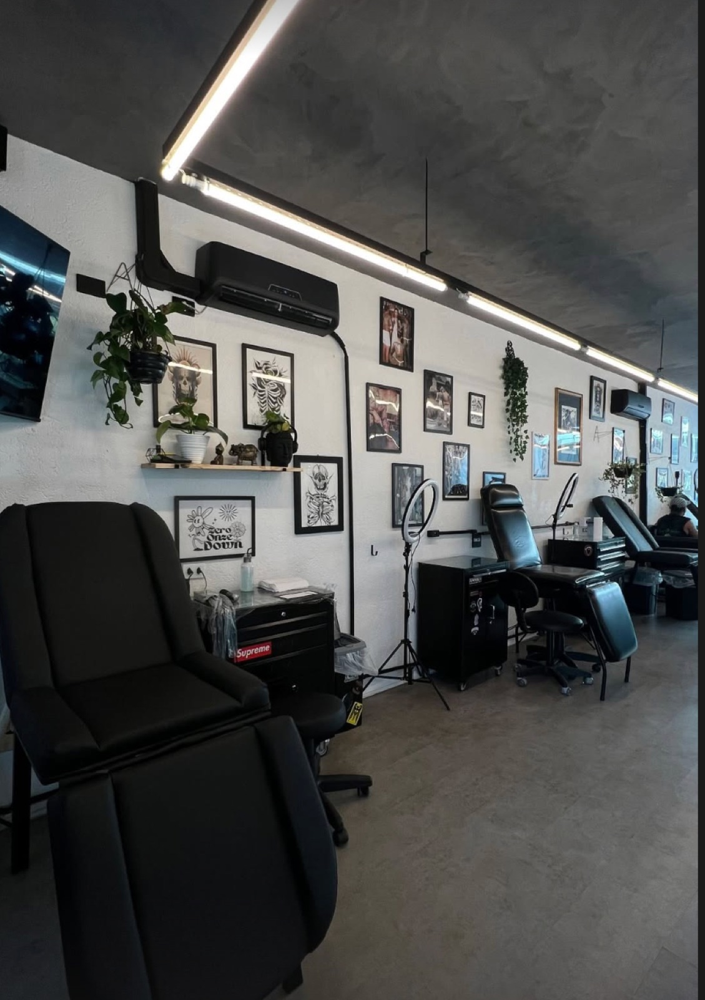
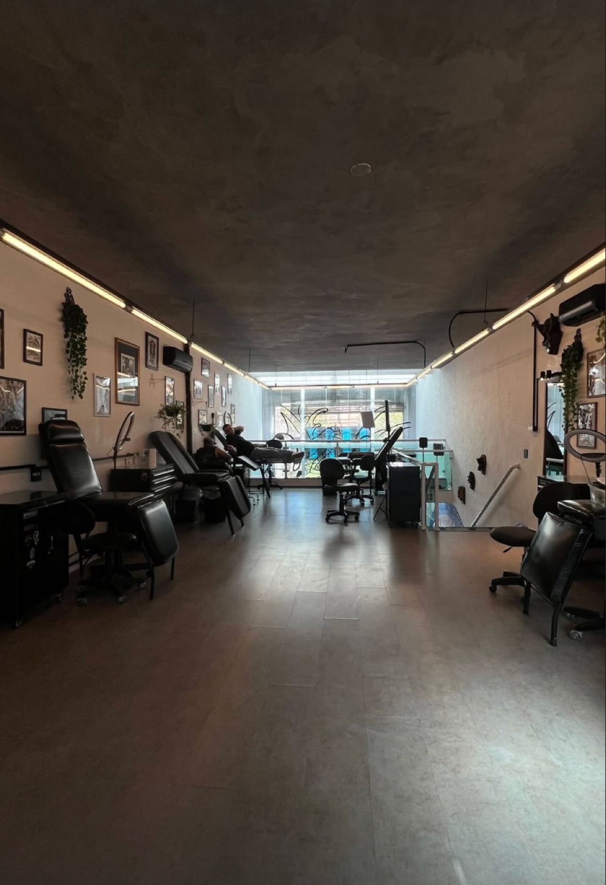

Sua pele é a tela.
Nós somos a arte.
Estúdio de tatuagem e piercing em São Paulo. Projetos autorais, cobertura de tattoos antigas e um espaço pensado para cada detalhe da sua experiência.
Um estúdio pra ser sentido, não só visitado.
Ambiente que mistura galeria, estúdio e lounge — pensado para quem respeita a tattoo como arte.



Tatuadores por trás da arte.
Em breve, cada artista com portfólio, estilo e agenda própria. Enquanto isso, fale com a gente que indicamos o profissional certo pro seu projeto.
Tatuador(a)
Estilo — a confirmar
Tatuador(a)
Estilo — a confirmar
Tatuador(a)
Estilo — a confirmar
Tattoo e piercing, do jeito certo.
Projeto autoral
Criação personalizada a partir da sua ideia e referências.
Flash
Desenhos prontos do estúdio, para quem quer agilidade sem abrir mão da qualidade.
Cover-up / Fechamento
Transformação de tattoos antigas e fechamento de braço, perna ou costas.
Piercing
Aplicação com material e procedimento seguros.
Fine line / Minimalista
Traços finos e delicados para quem busca discrição.
Grandes formatos
Projetos de fechamento e peças de corpo inteiro, com acompanhamento por sessões.
Conte sua ideia, a gente monta o projeto.
Preencha o briefing rápido abaixo — ao final, você envia direto pro nosso WhatsApp já com tudo organizado.
Nenhum valor é calculado automaticamente — o orçamento é feito pela equipe a partir do seu briefing.
Perguntas frequentes.
Depende da região do corpo e da sensibilidade de cada pessoa. Áreas com mais osso ou pele fina costumam doer mais do que áreas com mais músculo ou gordura.
O processo varia de pessoa pra pessoa, mas geralmente leva de 2 a 4 semanas. Na sessão, a equipe explica os cuidados específicos pra sua tattoo.
Sim. Cada caso é avaliado individualmente — mande fotos da tattoo atual pelo WhatsApp pra gente analisar as possibilidades.
Fale com a equipe pelo WhatsApp sobre idade mínima e documentação necessária antes de agendar.
Envie seu briefing pelo formulário acima ou direto no WhatsApp — a equipe retorna com disponibilidade e próximos passos.
Sua próxima tattoo começa com uma conversa.
Chama no WhatsApp ou dá uma olhada no nosso Instagram pra ver mais do nosso trabalho.